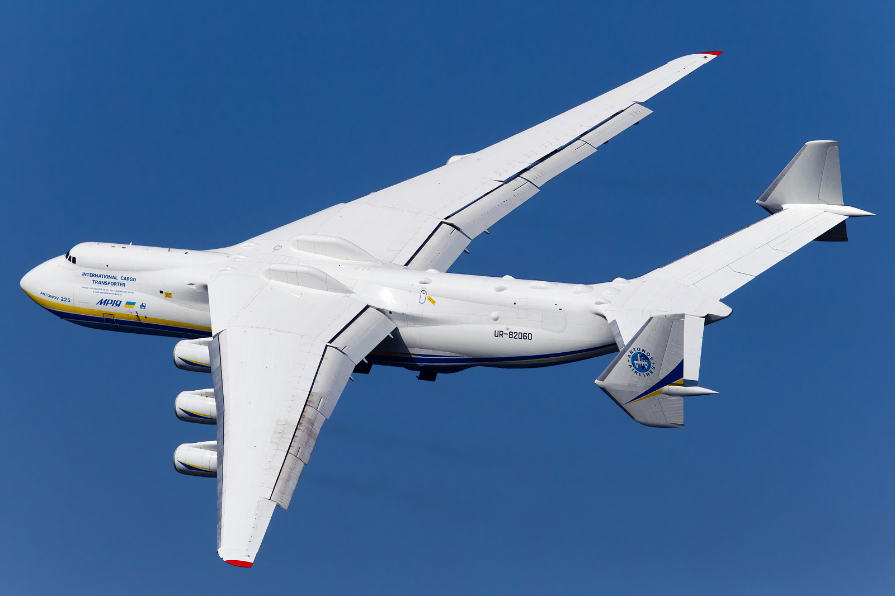

Ukraine has been a cradle of innovation, art, and scientific breakthroughs that have significantly impacted the world, often without receiving due recognition. Many inventions and creations that are globally renowned have Ukrainian roots, yet few are aware of their origin. This page sheds light on some of these remarkable contributions, highlighting Ukraine’s role in shaping global culture, technology, and science. Scroll down to discover the surprising Ukrainian connections behind these famous achievements.
“Shchedryk” – The Carol of the Bells
One of the most famous Christmas melodies worldwide, known as “Carol of the Bells,” originates from a Ukrainian folk song called “Shchedryk.” Composed by Ukrainian composer Mykola Leontovych in 1916, the song is based on an ancient folk chant celebrating the arrival of spring and the bountiful new year. Its mesmerizing melody has been adapted and performed globally, becoming a staple in holiday music, yet its Ukrainian roots are often overlooked.
Pioneering Rocket Technology
Ukraine has a storied history in aerospace engineering, particularly through the Yuzhne Design Bureau and Yuzhmash production plant in the city of Dnipro. Ukrainian engineers played a crucial role in developing rocket engines and intercontinental ballistic missiles during the Soviet era. The R-36M2 “Voevoda” missile, known by its NATO designation as “SS-18 Satan,” was designed and built in Ukraine. Today, Ukrainian expertise continues to contribute to international space exploration and satellite technology, including the development of launch vehicles like the Zenit rocket.
Igor Sikorsky – Father of the Modern Helicopter
Born in Kyiv in 1889, Igor Sikorsky was a pioneering aviation engineer who immigrated to the United States in 1919. He founded the Sikorsky Aircraft Corporation and designed the VS-300, America’s first practical helicopter, in 1939. Sikorsky’s innovations laid the foundation for modern helicopter design, transforming aviation and impacting fields from medicine to military operations. His work has left an indelible mark on global aviation history.

VS-300, America was impressed
Innovative Aircraft Design – Oleg Antonov
Oleg Antonov made his most significant contributions while working in Ukraine. He founded the Antonov Design Bureau in Kyiv, which designed the Antonov An-225 Mriya (Ukrainian for Dream), the world’s largest cargo airplane. The An-225 was originally developed to transport the Soviet space shuttle Buran and is renowned for its size and payload capacity. Antonov’s aircraft have been integral to aviation advancements and cargo transportation, showcasing Ukrainian engineering excellence.
An-225 Mriya, the world's largest cargo airplane
Mriya was totally destroyed in February 2022 by russians.
An-225 in it’s hangar in Hostomel, Kyiv region
Space Exploration – Leonid Kadeniuk
And that's not all sky-related.
Leonid Kadeniuk was the first astronaut of independent Ukraine. He flew on NASA’s Space Shuttle Columbia in 1997 as part of the STS-87 mission, conducting experiments on plant growth in microgravity.
Leonid Kadeniuk
By the way, the motors for some space rockets were build in Zaporizhzhia by Motor-Sich.
The First Gas Lamp
Moving on to the older times.
The world’s first modern gas lamp was invented in Lviv, Ukraine, in 1853 by pharmacists Gnat Lukashevych and Jan Zeh. While attempting to distill alcohol for medicinal purposes, they discovered a method to refine kerosene from petroleum. This breakthrough led to the invention of the gas lamp, revolutionizing indoor and street lighting by replacing candles and oil lamps, and paving the way for modern petroleum-based lighting and heating.
Electronic Music Pioneer – Leon Theremin
Leon Theremin, born Lev Termen in 1896 in Odesa, Ukraine, was the inventor of the theremin, one of the first electronic musical instruments. Patented in 1928, the theremin is unique because it is played without physical contact, using electromagnetic fields controlled by the musician’s hand movements. Theremin’s invention influenced the development of electronic music and has been used in various film soundtracks and compositions, leaving a lasting impact on the music industry.

Modern Theremin
The First Constitution in Europe
In 1710, Ukrainian Hetman Pylyp Orlyk authored a constitution known as the “Constitution of Pylyp Orlyk,” considered one of the world’s first democratic constitutions. It outlined the separation of powers among the legislative, executive, and judiciary branches and emphasized the protection of human rights and liberties. Though it was not implemented due to political circumstances, it represents a significant historical document in the development of constitutional governance and democratic ideals.
If you google “The first constitution in Europe” you will get Wikipedia page that says that “The world's first written constitution was drafted in the United States of America in 1787.” That is not true and now you know why.
The World’s Deepest Metro Station – Arsenalna
Arsenalna metro station in Kyiv is the deepest in the world, located 105.5 meters (346 feet) below ground. Well, China tries to build something even deeper, but the process hasn’t finished yet. Opened in 1960 as part of the first line of the Kyiv Metro, its depth was necessitated by the city’s hilly terrain and the proximity to the Dnipro River’s high banks. The station is an engineering marvel, with escalators that take several (4) minutes to ascend or descend, and it exemplifies Soviet-era architectural ambition. If you have a question why would we need the station that deep underground, the answer is pretty clear: it was build during the Cold War to act like nuclear shelter. The Cold War finished, but the station does act like a shelter during air alerts, not from American but russian missiles.

Last escalator to Arsenalna metro station (out of 2)
Pioneering Heart Surgery – Dr. Mykola Amosov
Dr. Mykola Amosov, a prominent Ukrainian heart surgeon and inventor, was a pioneer in thoracic surgery and biomedical engineering. He developed innovative surgical techniques and artificial heart valves, significantly advancing cardiac surgery. Amosov also authored influential works on medicine, cybernetics, and philosophy, contributing to both medical practice and ethical discussions. His methodologies have saved countless lives and continue to influence cardiac surgery globally.
The Invention of Bloodless Surgery Methods
Dr. Oleksandr Shalimov, a Ukrainian surgeon, made significant advancements in surgical techniques, including minimally invasive procedures that reduced the need for blood transfusions. He founded the Shalimov National Institute of Surgery and Transplantations in Kyiv, which became a leading center for surgical innovation. Shalimov performed over 40,000 surgeries and authored numerous scientific works, leaving a legacy of medical excellence.
Oleksandr Shamilov
The Hard Disk Drive Innovator – Lubomyr Romankiw
Let's talk about tech.
Lubomyr Romankiw, a Ukrainian-born scientist, made significant contributions to computer technology while working at IBM. He co-invented the technology behind the magnetic thin-film storage heads used in hard disk drives, which became foundational for modern data storage solutions. His work has been critical in the advancement of computers, allowing for the efficient storage and retrieval of vast amounts of data, and he holds over 65 patents. Somehow, wikipedia does not want to mention him on the HDD page.
WhatsApp Co-founder – Jan Koum
Jan Koum, born in Kyiv in 1976, is the co-founder of WhatsApp, one of the world’s most widely used messaging applications. After immigrating to the United States, Koum worked at Yahoo! before creating WhatsApp in 2009. The app revolutionized global communication. In 2014, Facebook acquired WhatsApp, solidifying Koum’s influence in the tech industry and connecting billions of users worldwide. Don’t forget to text your family today.
Innovative Camera Technologies – Anatoliy Kokush
Anatoliy Kokush, a Ukrainian engineer and inventor born in 1951, has significantly influenced the film industry with his groundbreaking camera technologies. He invented the U-Crane, a gyro-stabilized, remote-controlled camera crane mounted on vehicles, allowing filmmakers to capture dynamic and smooth tracking shots at various speeds and terrains.
The name should tell you about the origin, by the way.
The U-Crane and Flight Head systems have been widely adopted in Hollywood and international cinema. They have been utilized in blockbuster films such as “Mission: Impossible” series, “James Bond” films, “Fast & Furious” franchise, “Transformers”, and many others.
In 2006, Anatoliy Kokush was honored with two Scientific and Technical Academy Awards.
U-crane in action
Breakthroughs in Cryptography
Volodymyr Kolesnikov
A Ukrainian cryptographer, has made significant contributions to the field of secure multi-party computation and cryptographic protocols. His research enhances privacy and security in digital communications, impacting how data is protected in an increasingly connected world. Kolesnikov’s work is highly regarded in academic and professional circles.
These remarkable individuals and inventions represent just a fraction of Ukraine’s contributions to global progress. Now, lets talk about Ukraine itself. Be ready to be shocked.
Ukraine’s Digital Transformation
Ukraine is rapidly emerging as a leader in digital innovation, leveraging technology to enhance governance, financial systems, and daily life. The country’s commitment to digital transformation has resulted in some of the most advanced e-government services and banking solutions in the world. Scroll down to discover what’s Europe missing and how Ukraine is harnessing technology to create a more efficient, transparent, and user-friendly society.
Diia: Revolutionizing E-Government Services
At the forefront of Ukraine’s digital revolution is Diia, a groundbreaking mobile application and web portal launched by the Ministry of Digital Transformation in 2020. The name “Diia” stands for “Держава і я” in Ukrainian, meaning “State and Me”.
Diia provides access to over 70 government services online, including digital driver’s licenses, passports, tax identification numbers, e-signs and business registrations. Citizens can perform tasks such as opening a business, applying for social benefits, or renewing documents without visiting physical offices.
Imagine having valid documents, processing documents for buying a house, opening a loan in one application from the comfort of your couch at home. We don’t have to.
ID in application. Valid as document within Ukraine
Ukraine is one of the first countries to grant digital documents the same legal status as physical ones. Through Diia, users can present digital IDs, passports, and other documents that are officially recognized by authorities and businesses.
Security
The platform employs advanced security measures to protect personal data, including encryption and multifactor authentication, ensuring that users’ information remains confidential and secure.
For reference: russians try to hack it every day (literally) without any success. The only time when Diia was not working was while voting for a representative at Eurovision (yes, we voted through app) because people were too active.
A Modern Banking System
Ukraine’s banking sector has undergone significant modernization, embracing digital technologies to enhance financial services and customer experiences.
PrivatBank
As the largest and state-owned bank in Ukraine, PrivatBank was one of the first in the world to implement contactless payments and SMS banking. Its mobile app allows customers to perform virtually any transaction online, from bill payments to loans. Moreover, you can open and close cards, order a cash withdrawal and much more online.
Monobank
Launched in 2017 as Ukraine’s first mobile-only bank, Monobank operates entirely through a smartphone app. In addition to what PrivatBank can do offers services like instant account opening (record is 90 seconds), personalized spending analytics, and attractive cashback programs.
You can also buy some stuff like from Amazon, buy obligations, create “pockets” to save money by your own or with friends, make lots of cards and so much more.
And if you are business, you can set up simple QR-code that would lead to your menu, payments and tips. Easy for customer, a lot of information for business. They even have their own application called Expirenza.
In numbers:
1700+ establishments
38 cities
millions of customers each month
Just scan QR and you good to go, isn’t it handy?
Comprehensive Online Government Services
Beyond Diia, Ukraine has integrated digital technologies across various government sectors to improve efficiency and transparency.
E-Procurement with ProZorro
ProZorro (Ukrainian for transparently) is an award-winning electronic procurement system implemented to combat corruption and increase transparency in public spending.
It allows open access to government tender information, enabling businesses of all sizes to participate in public procurement processes fairly.
E-Health
Digitization of medical records and services allows patients to schedule appointments, access medical histories, and receive prescriptions electronically.
Remote consultations and diagnostics are becoming more prevalent, improving healthcare access, especially in rural areas. If they don't help – you can make an appointment just in 5 minutes.
Application “Helsi” where you can make an appointment and everything connected to your health
Digital Education Platforms
The government supports platforms that provide educational resources and courses online, promoting lifelong learning and digital literacy. Moreover, there is state-owned platform with different modern courses.
Ukraine’s contributions span various fields — science, technology, arts, and humanities — often without due recognition. And mentioned above – small part of real picture. Due to historical events we have been under the shadow of USSR, it’s time to show the world that we are separate, independent and great nation. These page aims to illuminate hidden stories and celebrate the Ukrainian innovators whose work has literally changed the modern world.
Now, undoubtedly, Ukraine is the most digitalized country in Europe, if not in the world. We have lots of problems including the war, but still improving and trying to live. Share this site to your friend who still thinks that Ukraine is just about wheat and if you want to know more, take a look at this video: